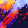

FootStamper

Review sports footage, zoom and pan, record timestamps.

Playback
- f
- k
- j
- l
- ,
- .
- left arrow
- right arrow
- Toggle fullscreen
- Play/pause
- Back 5 seconds
- Forward 5 seconds
- Back 1 frame
- Forward 1 frame
- Previous event
- Next event
Camera
- Q/q/w/e/E
- space
- Set zoom position
- Toggle zoom
Data
- numbers
- other alpha keys
- [
- ]
- delete
- Select squad member
- Record event
- Record increment team 1 score event
- Record increment team 2 score event
- Delete last event